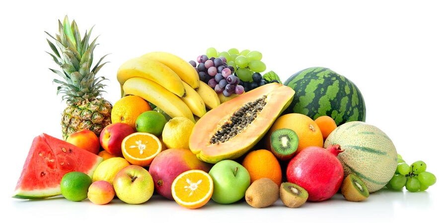

Food is absolutely vital for our survival and overall well-being. It's the primary source of energy and nutrients our bodies need to perform every single function, from breathing to thinking. A balanced diet, rich in carbohydrates, proteins, fats, vitamins, and minerals, acts as the fuel for our physical activity, keeps our immune system strong to fight off illnesses, and plays a critical role in repairing tissues and supporting growth throughout our lives. Beyond the biological necessities, food holds immense cultural and social significance. It brings people together, fostering connections and creating shared experiences. Think of family meals, festive feasts, or simply sharing a cup of tea – food is often at the heart of these moments, strengthening bonds and providing comfort. It also deeply influences our mental and emotional health, impacting our mood, concentration, and even our optimism. Eating wholesome foods can reduce the risk of chronic diseases like heart disease, diabetes, and certain cancers, contributing to a longer, healthier, and more fulfilling life.
in the above paragraph and video we learnt about importance of food ^^^
|  | Fruits are essential for health, packed with vitamins (like C and A), minerals (like potassium), and fiber. They boost immunity, aid digestion, protect against chronic diseases, and keep you hydrated. Eating a variety of fruits supports overall well-being and a vibrant life. |
 |
Vegetables are vital for health, providing essential vitamins (like A, C, K), minerals (like potassium), and fiber. They boost immunity, aid digestion, help manage weight, and significantly reduce the risk of chronic diseases. Eat a colorful variety daily for optimal well-being. |
| Natural juices offer a concentrated dose of vitamins (like C and A), minerals, and antioxidants, aiding hydration and boosting immunity. They're convenient for nutrient intake but lack the fiber of whole fruits and vegetables. Drink them in moderation alongside whole produce. |